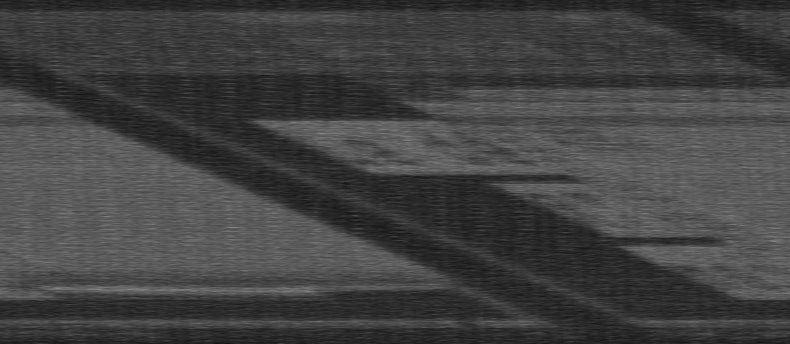
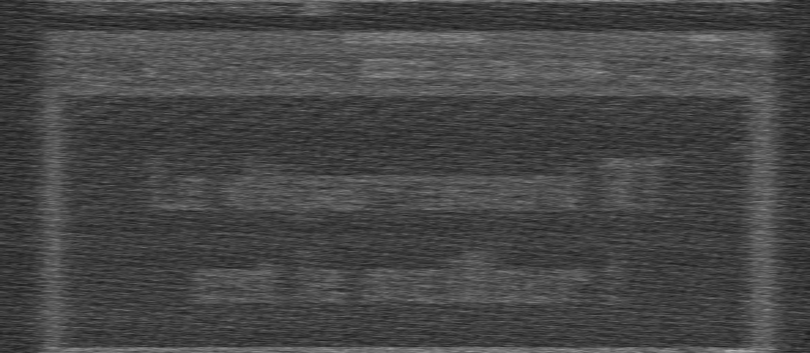

Rayonnements de Van Eck
Jan 21, 2026Est-ce que vous saviez qu’il est possible d’espionner des écrans d’ordinateur sans réseau, sans les toucher et même sans être devant ?
C’est ce qui s’appelle le Van Eck phreaking (dans la langue de Molière le rayonnement de Van Eck). Cette technique, connue par les États-Unis et Bell Labs depuis la Seconde Guerre Mondiale, repose sur le fait que puisqu’un signal électrique dans un fil produit un champ magnétique (loi d’Ampère), alors le fil (câble vidéo) se comporte comme une antenne. Avec le matériel adéquat et un bon traitement de signal, on peut reconstruire partiellement l’image de l’écran…
Cette technique est une attaque dite “par canal auxiliaire” (side‑channel attack), où l’attaquant n’exploite pas une faille logicielle classique, mais des fuites physiques de l’appareil. D’autres attaques par canal auxiliaire peuvent, par exemple, analyser la consommation électrique d’un équipement pendant un calcul cryptographique pour en extraire des informations normalement secrètes.
Un petit historique
En 1985, le chercheur néerlandais Wim van Eck publie le premier article non classifié montrant qu’il est possible de reconstruire l’image d’un écran à tube cathodique à une centaine de mètres, avec du matériel d’une valeur (à l’époque) d’environ 15 dollars (Van Eck, Electromagnetic radiation from video display units: An eavesdropping risk?, Computers & Security, 1985).
Cet article a eu un fort retentissement dans le milieu de la sécurité, où l’on pensait jusque-là que ce type d’attaque était réservé aux agences “à trois lettres”, compte tenu de sa complexité apparente et du caractère très spécialisé du matériel requis.
Et aujourd’hui ?
De nos jours, il est bien plus simple de rentrer dans le monde merveilleux (pour certains) de la radio, via la SDR (Software Defined Radio, ou radio logicielle) : Plus besoin de matériel dédié au traitement de signal, il suffit d’une antenne, d’un récepteur compatible SDR et d’un ordinateur. L’écoute des rayonnements de Van Eck est donc enfin accessible au grand public !
Curieux de tester l’efficacité de l’écoute, j’y ai pris part avec mon propre matériel. J’ai utilisé :
- une antenne omnidirectionelle adaptée pour recevoir les fréquences aux alentours de 140 MHz, fréquences émises par le signal HDMI.
- un récepteur SDRplay RSP1B
 Crédit image : www.passion-radio.fr
Crédit image : www.passion-radio.fr
- Et évidemment, un ordinateur
Au niveau logiciel, j’ai utilisé :
- SDRconnect (https://www.sdrplay.com/sdrconnect/) , afin de trouver la fréquence exacte du signal émis
- TempestSDR (https://github.com/martinmarinov/TempestSDR) , afin de reconstruire l’image à partir du signal
Afin de trouver le signal, on doit se servir de la fréquence d’horloge pour l’envoi des pixels sur l’écran, qui dépend principalement de :
- La résolution de l’écran (1920x1080)
- Du nombre de bits par couleur utilisés (8)
En se servant d’un site comme https://tomverbeure.github.io/video_timings_calculator?horiz_pixels=1920&vert_pixels=1080&refresh_rate=60&margins=false&interlaced=false&bpc=8&color_fmt=rgb444&video_opt=false&custom_hblank=80&custom_vblank=6 , on trouve une fréquence de 138.5 MHz (Mode CVT-RB).
On peut désormais tester si la réception se fait correctement. Pour cela j’ai utilisé cette vidéo (récupérée sur https://github.com/eried/Research/blob/master/HackRF/TempestSDR/tempest_test_elize_song.mp4) . Cette vidéo a la particularité, lorsqu’elle est “écoutée” par radio (c’est à dire quand on positionne son recepteur en face de l’écran), de jouer de la musique.
On affiche la vidéo en plein écran, et on passe sur SDRconnect. On définit la fréquence à 138MHz…

Et bingo, on entend la musique :
Écouter de la musique (de mauvaise qualité) par radio, c’est très bien, mais ce que l’on veut réellement c’est voir notre écran (sans le voir )… Pour cela, j’utilise TempestSDR (https://github.com/martinmarinov/TempestSDR) . Un logiciel développé par Martin Marinov lors de sa thèse de Master of Philosophy in Advanced Computer Science, à l’Université de Cambridge.
On renseigne la bonne résolution et fréquence d’image, et on donne la fréquence du signal à écouter (138.5 MHz)
On commence déjà à distinguer grossièrement du contenu surligné…
 Figure 3 : Image obtenue initialement
Après quelques ajustements sur les différents réglages, j’ai réussi à obtenir cette image :
 Figure 4: Si vous n’arrivez pas à lire, plissez les yeux et/ou prenez un peu de recul…
J’ai donc réussi, avec du matériel radio accessible au grand public, à lire du texte sur un écran de manière « clandestine ». Alors imaginez ce que les fameuses agences avec un budget illimité peuvent être capables de faire…
Cette technique m’a également inspiré à réaliser un challenge pour le CTF (Capture The Flag) SecuRT, organisé par nous-mêmes, les 3èmes années du BUT R&T et qui aura lieu le 3 février, tout cela dans le cadre de la dernière SAÉ avant la fin de notre diplôme : la SAÉ 601.